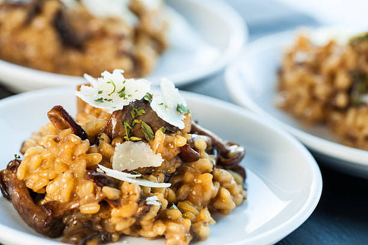

Ingredients
- 3 1/2 cups reduced sodium fat-free chicken broth, or vegetable broth
- 2 teaspoons olive oil
- 1 medium onion, finely chopped
- 2 cloves garlic, minced
- 1 cup Arborio rice
- 1 teaspoon mixed dried herbs, or Italian seasoning
- 6 ounces cremini mushrooms, sliced
- 6 ounces shiitake mushrooms, sliced
- 2 cups fresh baby spinach
- 1/4 cup fresh parsley, chopped, for garnish
Description
Risotto is an Italian rice dish where short grain Arborio rice is cooked in broth until creamy. Most recipes use butter, onion, and garlic, white wine to deglaze the pan, and Parmesan cheese to finish. Mushroom Risotto is a popular variation that adds a savory, umami flavor with Shiitake and Crimini mushrooms.
Recipe sourced from Fiona Haynes
Instructions
- Pour broth into a 2-quart saucepan and heat over medium heat until simmering, but not boiling. Cover to keep warm and leave on a very low simmer.
- In a large skillet, heat the oil over medium heat. Sauté the onion and garlic until softened and fragrant, about 3 to 5 minutes, making sure the garlic doesn't brown.
- Add the rice and sauté for 1 minute, stirring to prevent sticking.
- Sprinkle in the dried herbs and add the mushrooms. Sauté the rice-and-mushroom mixture until the mushrooms release their juices, 5 to 8 minutes.
- Add the white wine and stir.
- Once the wine has been mostly absorbed, carefully add 2 cups of the hot broth, 1 cup at a time, stirring and waiting until each cup of broth has been completely absorbed before adding the next. Continuously stir during the process to avoid having the rice stick to the bottom or sides of the skillet.
- Add the spinach before adding the remaining 1 1/2 cups of broth. Stir to combine.
- Once all the liquid is absorbed, sprinkle with fresh parsley and serve immediately.